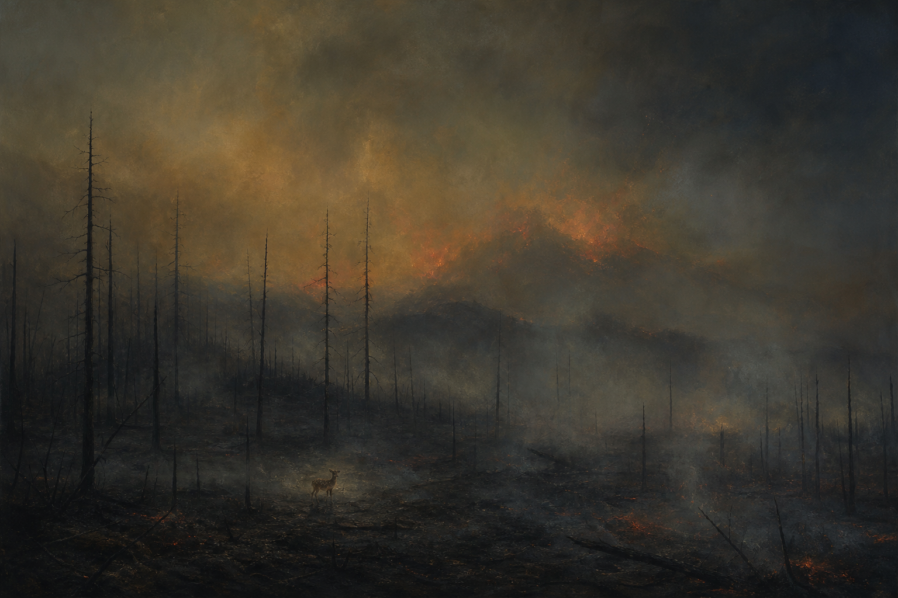
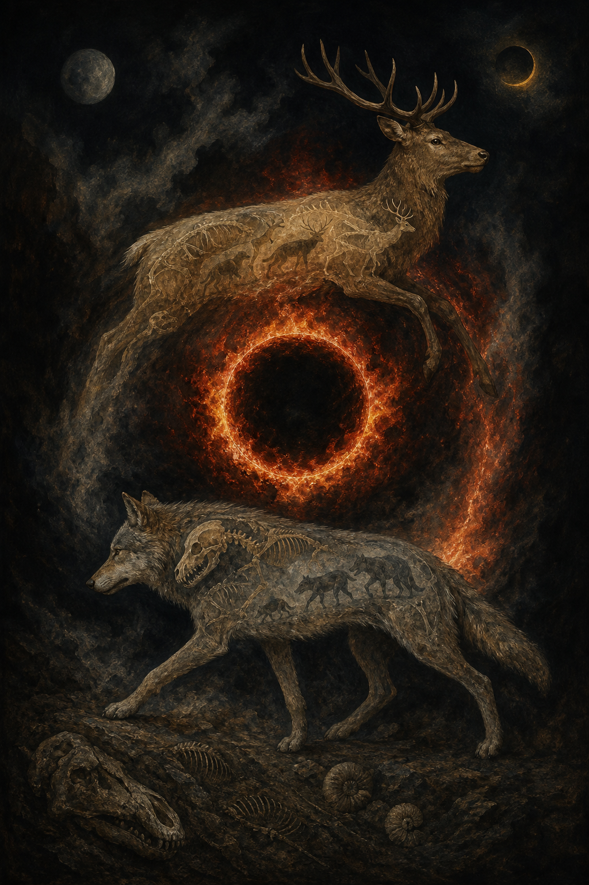
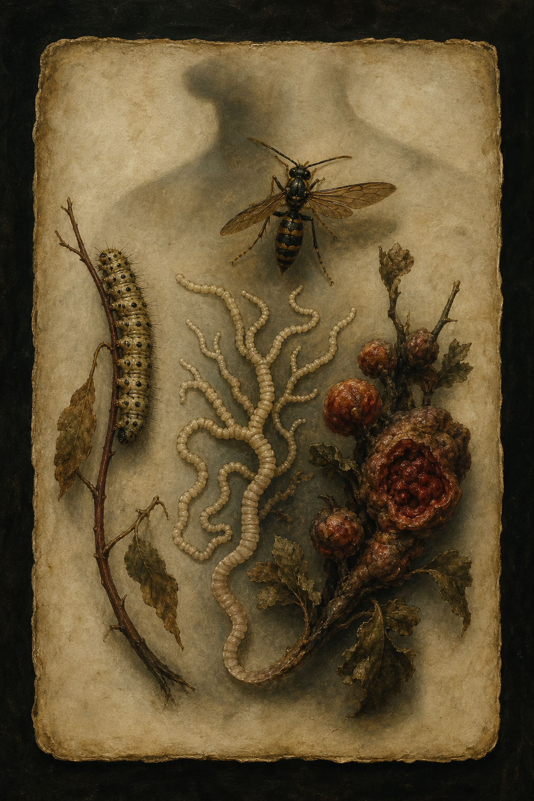
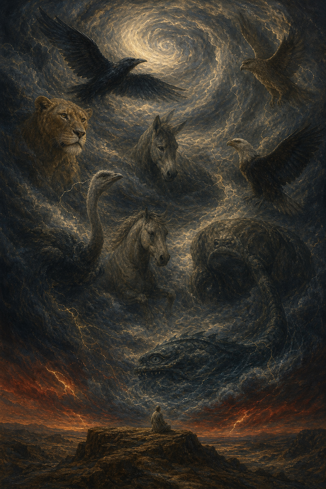
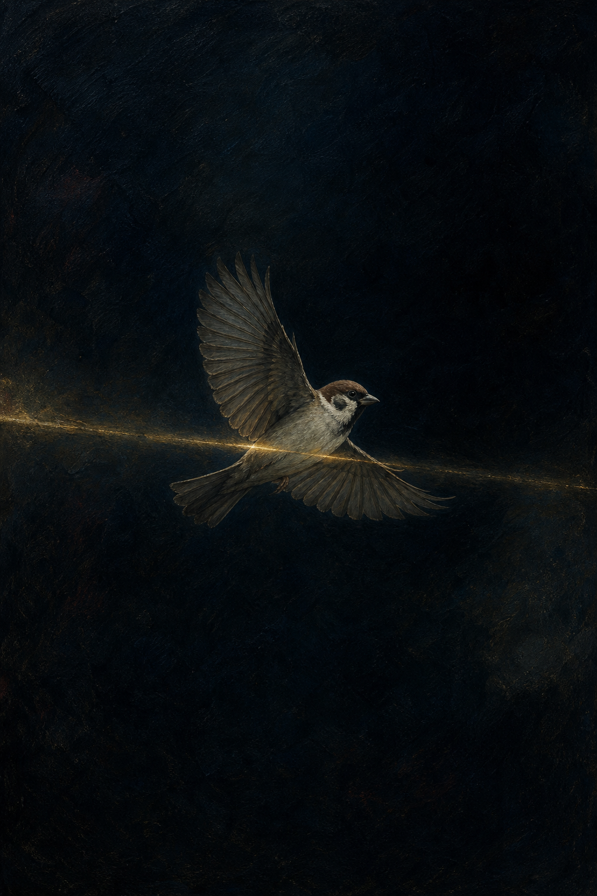
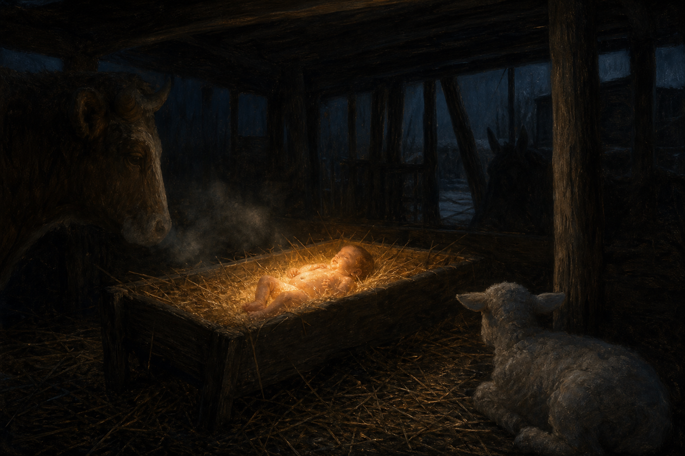
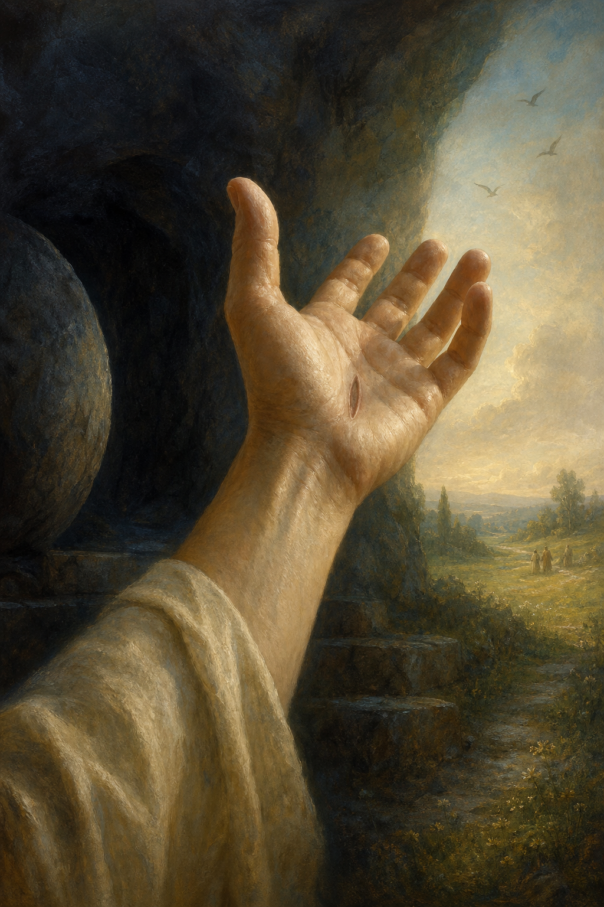
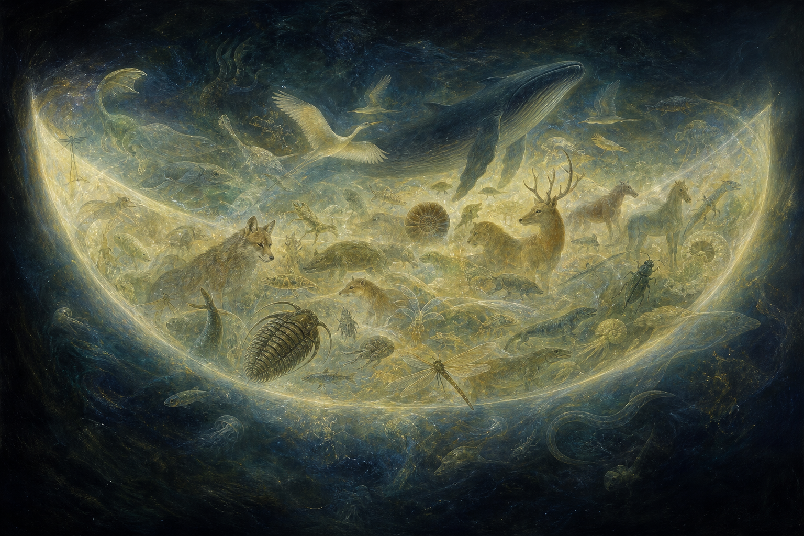
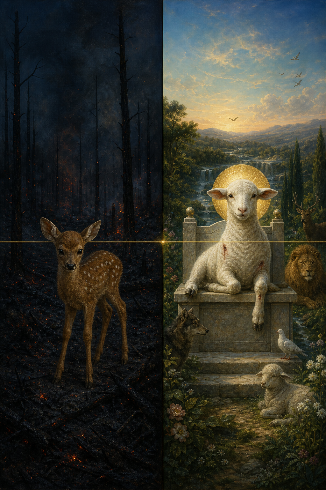
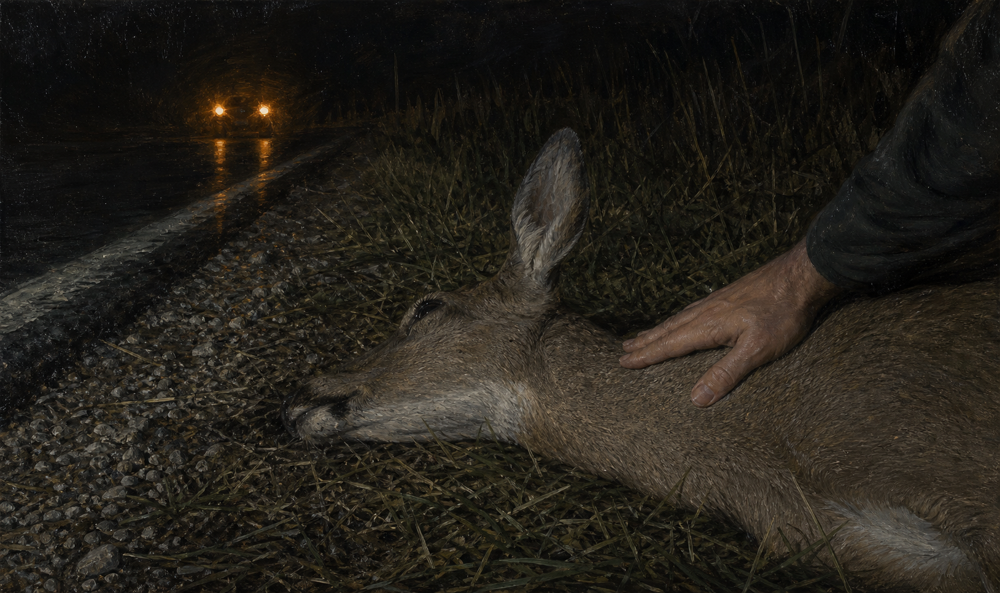

Not One Sparrow
A meditation on the suffering of animals and the mercy of God
"The whole creation groaneth and travaileth in pain together until now." — Romans 8:22
I. The Long Dark Before Us
The unwitnessed fawn

The long dark before us
FIRST LIGHTORDOVICIAN
WOUNDPERMIAN
THE GREAT DYINGCRETACEOUS
ASHTHE LONG DARK
Start before us.
Not at the beginning of the story we like to tell — the one with a garden in it, and two people, and a piece of fruit, and somebody to blame. Start earlier than that. Start in water, in the dark, hundreds of millions of years before there existed anything on this planet capable of doing wrong.
Among the earliest eyes the fossil record preserves clearly are the eyes of trilobites, and their lenses were made of calcite. Clear stone. Stone that could see. And a great deal of what eyes were for, from very near the beginning, was hunger — finding, or not being found.1 The first congregation of light on this world gathered for the hunt.
Then came the long ages nobody mourned. Fern forests standing and falling in silence, no one to hear the timber go. Griffinflies crossing Carboniferous air on wings as wide as a hawk's. The sea filling and emptying like a lung, for a length of time the mind cannot hold and should stop pretending it can. Again and again the living world was broken open — five great extinctions cut into the rock, one of them so total that scientists, who are not given to drama, named it the Great Dying. The trilobites had been watching the world for more than a quarter of a billion years. They closed their stone eyes and did not open them again. Nobody blasphemed. Nobody prayed. It simply went on, unwitnessed, like rain falling on open ocean.
We have to be careful even here, because the careless version of this argument is easy to knock down and I do not want to make it.
Death is not the same thing as suffering. A bacterium dies without an inward tragedy occurring. A creature can pull away from injury without possessing anything like the felt anguish of a deer. Biology draws the line precisely: is the detection and neural encoding of damaging stimuli, and pain is an unpleasant sensory and emotional experience — the difference between a system registering damage and someone being hurt. We cannot look backwards through stone and locate the exact morning when the first hurt became a hurt to somebody. And we should not go filling the Cambrian seas with little human minds because it makes the essay easier to write.
But modesty does not make the problem go away; it only tells you where to stand while you look at it. There is strong scientific support for conscious experience in mammals and birds, serious evidence in fish, and at least a realistic possibility across all vertebrates and a widening circle of invertebrates — cephalopods, decapod crustaceans, possibly insects.2 Long before any human being did anything wrong, there were creatures for whom a wound was not merely tissue damage but alarm, distress, terror, felt loss. Long before anyone could ask why, there were beings to whom something could happen badly.
And it was not only vast. That is the part the deep-time framing hides. Vastness is almost comfortable; it turns into a number and numbers do not scream. It was also small, and close, and specific, and it happened one body at a time.
somewhere in a forest with no name lightning came down and the undergrowth took and a fawn too slow to get clear lay in the ash for days before she died, and the ash went on being warm underneath her, and there was nothing wrong with her mind, she wanted to get up. somewhere an animal with a broken jaw starved beside food it could smell. somewhere fever moved through a den and took all of them in three days and the last one alive stayed. somewhere something entered a living body and ate it slowly from the inside while the body kept walking around, kept grooming itself, kept going to the water. somewhere a calf stood over a mother who would not get up and called and called and called. no one saw any of it. no human eye, no notebook, no elegy. and not one of those creatures could take the pain and make it into anything — not courage, not repentance, not sacrifice, not testimony, not even a sentence. they could suffer. they could not ask what suffering was for.
put the accusation into one of its permanent forms. Writing to Asa Gray in 1860, he said he could not persuade himself that a beneficent and omnipotent God had deliberately designed the ichneumon wasp so that its young could feed inside the living bodies of caterpillars; in the same breath he mentioned the cat playing with the mouse.3 Add the tapeworm and the tumor. Add the blind arithmetic of plague. Add the seal pup and the patient orca, and the cuckoo chick heaving its foster-siblings over the rim of the nest and into the grass while the foster-parents keep feeding the murderer.
None of it waited for Adam. The blood is older than the sin.
So nobody gets to reach for Eden quickly here, and the speed with which religious people reach for it is itself worth noticing. Whatever you make of Genesis, there is no human fall old enough on any ordinary chronology to answer for the Permian. Christians have sometimes speculated about a primordial angelic rebellion, or a cosmic disorder running deeper than human history; entertained possibilities in that neighborhood and was honest that he was doing so. But speculation is not explanation. We have no revealed map by which to assign the parasite, the cancer cell, or the asteroid to a datable act of angelic malice — and an invisible fall introduced for no reason except to save a theory is explaining the evidence too cheaply. The main weight cannot be shifted offstage. It has to be carried here, in the light, where people can see what you are doing with it.
Contemporary philosophy presses the same point without needing a strict contradiction, which makes it harder to answer, not easier. William 's famous example is precisely the fawn: caught in a natural fire, badly burned, lingering in agony, with no greater good visibly hanging on those extra days. Rowe does not need to prove that God and suffering are logically incompatible. He only asks whether such suffering looks gratuitous — whether a perfectly good and powerful being could have prevented it without losing some equal or greater good. Paul presses a related question in probabilities. Is the actual distribution of pain and pleasure in this world — its indifference to innocence, its frequent excess beyond any usefulness, its reach far back into prehuman nature — more what you would expect if reality is governed by a morally perfect providence, or if the biological world is simply indifferent to the welfare of the things living inside it?4
That is the evidential problem at full strength, and it is not the question people think it is.
It is not the childish question, why is there any discomfort at all. It is not answered by pointing out that courage requires danger, or that free will makes murder possible. The fawn is not becoming virtuous. The caterpillar has not abused its liberty. The trilobite did not fall from grace. What is in question is the quantity, the intensity, the distribution, and above all the antiquity of suffering among creatures who could feel everything and were guilty of nothing and could not understand one second of it.
Why create through evolution at all? Why give pain an intensity capable of swallowing every other awareness a creature has? Why prolonged agony instead of a merciful switch that trips into unconsciousness? Why parasites that keep the host alive precisely so they can go on eating it? Why a reproductive strategy in which hundreds are born so that two get through? Why disease, deformity, starvation, predation, senescence, extinction? Why should stable natural laws require this architecture and not some other one? If God can promise a world where the wolf and the lamb lie down together, why was the world not made that way to begin with? If every tear is going to be wiped away in the end, why permit the tear?
A character in Dostoevsky hands back his ticket to heaven over the tears of one tortured child. What ticket gets handed back for hundreds of millions of years of creatures who could suffer and could not sin, who could feel and could not hope?
That is the accusation at its full height, and any answer that does not first kneel to it is not an answer, it is a change of subject. It comes down to two options and neither is comfortable: either God was not there, or God watched.
The Christian says: God watched. And did more than watch.
But that is the end of this meditation, and we have only just started. Stay in the dark a while longer. The dark is where an answer has to be able to live, or it is not an answer, it is a mood that only survives in good weather.
II. The Unfinished World
Good, but not finished
Go back to the first page. And God saw that it was very good.
We have read that sentence for a long time as though it said finished, and it does not say finished. This is not a trick hidden in a Hebrew adjective — I am not going to solve the problem of pain with a lexicon. It is a thing the whole story says. Scripture opens with a garden and closes with a city-garden still coming down out of the sky. Creation starts in blessing and ends not in a restoration to the first morning but in resurrection, judgment, marriage, communion, and the making-new of everything there is. The first world is good. The last is glory. And in between there is a history, which is the part we are standing in.
Catholic theology has a precise phrase for this, and precision here is worth more than eloquence. Creation did not spring out complete in its final perfection. It exists — in a state of journeying — toward a consummation God has appointed for it. The Catechism says exactly this, and says it in the same breath in which it admits that during the journey constructive and destructive forces appear side by side and physical evil accompanies the world's unfinished state. It also refuses the cheap exit. To the question of why evil exists, it says plainly that no quick answer will do. The whole of the faith has to bear the weight, not one clever mechanism produced at the right moment like a card.5
So good may be the shipwright's word at the launching rather than the harbormaster's word when the last voyage is done. A ship can be genuinely good and not yet home. A seed is good and is not a tree. A child is wholly loved and is not complete. And the tradition noticed a long time ago that Genesis gives the seventh day no evening — which proves nothing scientifically and is not an exegetical trump card, but it leaves a door open: the Sabbath of God may not be entirely behind us. In the Resurrection the Church starts speaking of an eighth day, the first day of a new creation. All of us live in the long travail between the blessing and the Sabbath. Fur and feather and flesh alike.
This changes the picture. It does not acquit it. Keep those separate or the whole essay turns into a con.
God did not build a museum and call it creation. He made a world with a before and an after in it. He did not arrange a finished diorama with each animal set down like a figurine on a shelf, dusted, permanent, doing nothing. He gave creatures what Catholic thought calls : the dignity of really acting, really affecting one another, really producing consequences, really being causes inside creation. God is not one more cause elbowing for room alongside rain, genes, tectonic plates, and animal appetites. He is the source by which every finite cause exists and acts at all. And those finite causes are real. Their histories are not pantomime; the wolf is actually hunting.6
Here the phrase world is useful and also dangerous enough that it needs handling.
Matter does not deliberate. A molecule has never once dreamed of becoming a mammal. A species does not survey possible futures and choose a shape it likes. Mutation, recombination, , drift, development, ecological interaction — none of these has a mind, singly or together, and any theology built on the assumption that they do is building on sand and will deserve what happens to it. Self-making cannot mean creation creating itself out of nothing, or steering toward a consciously chosen end, or possessing the moral freedom of a person.
It means something more chastened, and analogical. God gives creation a lawful integrity through which genuine novelty arises by way of creaturely processes. Organisms inherit an actual past rather than displaying a convincing appearance of one. Species emerge through the meeting of variation and environment. Life explores possibilities without every feather and every tooth being separately lowered into place from above. The world is made by God in such a way that it also genuinely makes history. It is not independent of him. It is not conscious. But it is not a painted backdrop either, and the difference matters more than it looks.
Why would that kind of world be worth making?
Because some goods do not belong to a finished shape. They belong to a story, and a story cannot be delivered whole; it has to be gone through.
The salmon's body is not a sculpture in the shape of a swimmer. It belongs to generations that met the river and were changed by meeting it. A wolf pack's social intelligence is not an ornament glued onto wolves; it is lived, between mothers and siblings and rivals, through hunger and play and winter and the specific politics of a specific pack. The plover's broken-wing display is not only a mechanism. In the individual bird it becomes an act — unreflective, maybe, but real — by which a small vulnerable body drags danger toward itself and away from its young, which is a thing worth stopping over. An animal is not less itself for having powers with a history behind them. In one sense it is more fully a creature, because it has received itself through parents, habitat, time, and other lives.
There is a dignity in a world whose creatures are causes and not merely effects, participants and not props. We know a small echo of it. A garden that was grown is not interchangeable with plastic flowers arranged into the same shape. A friendship with fifteen years in it contains something that an instant duplication of the present feelings would not supply. A scar that healed is not simply unbroken skin. The end has gathered a passage into itself.
Now hold that analogy still and put a knife to it, because it will not survive everything.
If God can create a mature human being with no childhood, as the traditional reading of Adam supposes, why could he not create a mature pelican already possessing every power an evolved pelican has? If an exact living duplicate can fly, bond, feed its young, and feel whatever a pelican feels, then evolution is not logically necessary for that creature's interiority. And if the renewed creation can contain bodily life without predation and corruption — which Christianity says it can — then suffering cannot be metaphysically necessary for every possible form of embodied flourishing. The appeal to history may show why an evolved world has distinctive goods in it. It does not show that those goods could only have been purchased at the price that was actually paid.
The same caution applies to the appeal to natural law, and this is the argument Christians lean on hardest, so it deserves the hardest look.
A bodily world requires regularity. The fire that burns the fawn is the fire that opens the cones and warms the den. The water that drowns is the water that carries the whale and lifts the heron off the shallows. Gravity gives the swift its fall and the eagle its flight; it is the same gravity, there is not a second one for the nestling. A universe of perpetual exception — where flames went cool at the touch of fur, pathogens dissolved the instant an infection would have started to hurt, gravity paused politely under every falling chick — would no longer be a world in which anything could be done. Causes could not be trusted to cause. Skill, anticipation, learning, agency, the whole inside life of an animal that has learned where the water is and when the hawk comes: unintelligible.
That is a serious answer, and it kills off the fantasy of constant rescue. It explains why a stable creation cannot simultaneously be a stage on which every harmful consequence is quietly cancelled at the last instant by a hand nobody sees.
But it is not yet an answer to the deeper objection, and the deeper objection is the one that keeps people awake.
Stable law is one thing. The choice of a total cosmic system is another. From the necessity of regularity it does not follow that God had to choose carbon-based organisms vulnerable to cancer, or food webs structured around consumption, or nervous systems capable of prolonged distress after all usefulness has ended, or reproductive strategies built on enormous attrition. The laws could be stable and different. The initial conditions could be different. The architecture of life could be different. "Miracles would disrupt science" is not enough of a reply, because the skeptic is not asking why God does not constantly break his own world. He is asking why God did not make another lawful one.
And to answer that every imaginable alternative would carry equal or worse hidden costs is to claim knowledge nobody has. Perhaps some goods genuinely require risk. Perhaps every sufficiently rich material order contains tradeoffs invisible from inside one specimen. Perhaps a world capable of generating free rational creatures through a continuous natural history has to pass through forms capable of predation and pain. But perhaps is doing honest work in those sentences, and it should be left visible. There is no theorem proving that this biosphere, with this measure of anguish in it, was the only one Omnipotence could have made. Anyone who tells you there is has stopped doing theology and started doing inventory on a power he cannot audit.
So the Christian claim here should get smaller, and in getting smaller it gets stronger. Creation's unfinishedness makes evolutionary history theologically intelligible. Stable secondary causes make a world of genuine becoming coherent. Together they show why God might will more than a finished display — a creation with integrity, fecundity, relationship, surprise, and an inside. They may show why risk belongs to creaturely becoming at all. They do not disclose the hidden reason behind any particular wound, and they do not establish that every form or degree of suffering was strictly required.
A beginning can be innocent without being consummated. An end can contain what a beginning could not: histories actually lived, lives received from other lives, wounds healed rather than never risked, fidelity proved rather than assumed, a whole creation gathered into communion with its incarnate Lord. The peaceable kingdom is not Eden rewound like tape. It is creation after Easter. The wolf does not lie down beside the lamb because there was never a hunt. He lies down because the hunt is no longer the last true thing about either of them.
The skeptic can still ask, and he is within his rights: why should consummation require a forge? Why could the last world not have been the first?
The unfinished world only begins to answer that. So look into the fire.
III. The Forge
The evolutionary forge

The beautiful plate and the terrible life

Bought with what? Look at something you love in the natural world — really look at it — and then ask what it cost and who paid.
The swiftness of the deer was written, in part, by the wolf. The wolf's patience and coordination were written, in part, by the deer. The broken-wing dance of the mother plover, that small masterpiece of courage and lying, was composed across generations in which predators found nests and some parents drew them off and did not come back. The eye itself — the fawn's dark eye, the one that undoes us, the one that makes this entire problem feel like a personal insult — comes to us through a history in which seeing decided who ate and who was eaten, who mated and who vanished without issue.
Those lines are true as poetry and dangerous as biology, so let me immediately take them apart.
Evolution keeps no ledger. The wolf did not sit down to write the deer. Natural selection did not foresee an antelope while preserving a slightly faster ancestor; it does not foresee anything, ever, at all. It is the differential survival and reproduction of heritable variations within particular environments, working alongside mutation, recombination, drift, migration, and developmental constraint. It has no eye for the future, no preference for complexity, no mercy for the loser and no intention even toward the winner. It does not aim at perfection. It retains, for a while, whatever reproduces well enough here.7
That distinction carries moral weight, and it cuts against the apologist more often than the atheist.
To show that a trait was useful in evolutionary history is not to show that the suffering attached to it was justified. Useful means that on average, in context, it affected survival or reproduction. Good is a much larger word and does different work. A nervous system can be a biological triumph and still inflict terrible experience on the animal carrying it around. Natural selection optimizes nobody's happiness. It does not ask whether the alarm was proportionate to the danger, whether the dying is taking too long, whether the host has suffered enough now.
Pain makes this clearest, and it is worth being exact about pain, because half the bad arguments in this whole debate come from being vague about it.
Nociception detects actual or threatened damage. Pain adds felt aversion — the wound now matters from the inside, to somebody. And acute pain is a genuinely superb instrument. It commands withdrawal from heat. It guards an injured limb by making the limb impossible to ignore. It focuses attention, teaches avoidance in one lesson, enforces rest. An animal wholly indifferent to torn tissue would not be liberated, it would be dead by Thursday. Within a mortal biology, the capacity to hurt is one of the capacities by which a creature keeps itself whole.8
But pain is not a well-adjusted guardian. It goes on long after its protective work is finished. Nerves stay sensitized. Inflammation persists. Tumors press. Damaged systems generate pain with no new injury to report. Mechanisms that are adaptive in general become maladaptive in this particular body, on this particular afternoon. And evolution routinely favors alarms whose false positives are cheaper than a single fatal silence — better for the rustle in the grass to terrify you ten times for nothing than for the eleventh to be a leopard. What protects a lineage can crush an individual. What is useful before escape may be useless after escape has become impossible.
Which answers one question and sharpens another.
Why is there pain? Because creatures with vulnerable bodies need warning, learning, protection.
Why can pain become total, prolonged, and apparently pointless? Because the process that shaped the warning was not calibrating any individual death for mercy. Once an animal has been fatally burned, nothing in natural selection requires an inner anesthetist to arrive and shut the system down. If the trait makes no meaningful difference to reproduction, selection barely distinguishes a swift death from three days in the ash. The extra anguish can be spillover — not a tool, but an alarm still ringing in a house that has already burned down and has nobody left in it to warn.
Here the natural-law defense reaches its most sobering form, and it is a form that helps Christianity by conceding something.
The world can contain suffering that is not itself a means to any good, even where the capacity or system it arises from serves real goods. A smoke detector is useful; its screaming after the family is out on the lawn accomplishes precisely nothing. An immune system is necessary for embodied life of our kind; autoimmune disease is not therefore necessary as an end, and no one should say it is. The possibility of mutation belongs to reproduction and repair; that does not make a child's tumor good. To say that God can draw good out of an evil is not to say the evil was secretly good the whole time, and every time those two sentences get blurred, someone standing beside a hospital bed gets hurt by a Christian who meant well.
Predation has to be named exactly too, in both directions.
It is not cruelty. Cruelty belongs to a moral agent who recognizes another's suffering and chooses to inflict or enjoy it without just cause. The hawk is not wicked. The orca has broken no commandment. A parasitoid wasp is not a sadist; it has no inner life in which sadism could occur. To call these creatures morally evil is to confuse appetite with malice and nature with guilt, and it is the mistake that turns a serious argument into a cartoon.
But clearing the predator of guilt does not clear the prey of pain. A death can be entirely innocent on the hunter's side and entirely terrible on the victim's, and both facts stay standing in the same field at the same moment. The distinction between predation and cruelty protects the animal from a false accusation. It must not be quietly repurposed into a trick for making suffering disappear. The gazelle's terror is not one degree less real because the lion is blameless.
And not all predation should be gathered under one romantic word. Sometimes the kill is quick, and the nature documentary tells the truth. Sometimes it is not. Some predators begin feeding before consciousness has gone. Some hunt in ways that look like play, or practice, or surplus killing, and we should be careful about projecting human motives into that — and equally careful about baptizing every scene with the word beautiful because the light was nice and the music swelled. There is grandeur in the cheetah's speed. There may be horror in what that speed catches. Both are true inside the same minute.
Parasitism presses harder, because its whole form can look like an answer to the question, what would make theism least plausible? One creature becomes another creature's habitat and food supply. The parasite may hijack behavior, suppress immunity, consume tissue in a careful order that keeps the host alive precisely long enough. Biologically the strategy is completely intelligible: life exploits available energy and available niches, and here was a niche. Theologically, a niche was available is not a vindication. Darwin's caterpillar is still alive under the explanation, which is the whole problem, and the explanation can actually make the accusation worse — because it shows that this suffering is not an occasional breakdown in the system but can be woven into a stable and successful way of living.
Disease adds a different darkness. A body complex enough to heal is a body complex enough to heal wrongly. Cells capable of division become cancers. Immune defenses savage the body they exist to defend. Viruses and bacteria evolve inside the same lawful order as their hosts and are not intruders from outside it. Aging is not one merciful switch left off; it is interacting limits, tradeoffs, and accumulated failures, arriving on no schedule and negotiating with no one.
None of this requires imagining disease as an independent substance God created and pronounced good, and 's insight remains genuinely useful here: evil is parasitic on goods. Cancer requires the good of cellular life. Blindness is the loss of sight in a creature whose nature is ordered toward seeing. Pain is an injury to a being capable of flourishing. Evil cannot build a house of its own; it lives in cracks opened inside good things, which is why it always arrives looking like something familiar.
Yet theory tells us what evil is. It does not tell us why this creature was permitted to carry it. To say to the fawn that pain is a privation of due flourishing is metaphysically exact and existentially empty. It protects God from having manufactured evil-stuff. It does not explain the days in the ash, and I would rather say that plainly than let a true distinction do work it was never built to do.
Extinction and reproductive waste widen the same wound. Life produces extravagantly. Fish scatter thousands of eggs. Insects lay multitudes. Many mammals bear young who will not reach maturity, and the mother will carry, feed, and defend them anyway, which is its own quiet horror. The abundance is not sheer waste — those bodies feed other bodies, and high fecundity lets populations survive unstable conditions — but a creature starving in its first week is not consoled by the persistence of its species. And species vanish too. Better than ninety-nine percent of all species that have ever existed are extinct. Natural selection has no foresight with which to preserve a lineage against the next asteroid, eruption, climate shift, or better competitor. It makes local bargains and leaves no promises.9
Now, the defender of creation can point truthfully to what has come through this order: diversity, adaptation, perception, flight, play, sociality, parental care, intelligence, and eventually creatures who can ask the question this essay is asking. Holmes speaks of a cruciform creation — tragic and astonishingly prolific, life passing again and again through death into new life. Christopher has built perhaps the most serious Christian version of the argument: that an evolving creation may be the only way, or the best way, for God to bring about the beauty, diversity, , and creaturely selfhood of the biosphere; that God co-suffers with those creatures; and that they are promised fulfillment at the end.10
There is real power in that. It rescues evolution from the caricature of a cosmic accident or a botched job. It recognizes that animals have their own goods — not usefulness to us, but the good of being a seal, a raven, an octopus, a horse, which is a good even if no human being ever sees it happen. It refuses the sterile paradise in which nothing can be harmed because nothing is alive enough to matter.
But only way outruns what anyone has demonstrated, and I think Christians should say so out loud rather than let a helpful phrase harden into a claim.
Could God have made an exact living pelican with no evolutionary ancestry? Could he create rational freedom in a material order running on other biological laws? Could pain have had a lower ceiling? Could dying animals lose consciousness faster? Could parasites have been excluded while ecological complexity remained? Could the peace promised at the end have been given at the beginning?
We do not know. Not one of those is answerable from where we are standing. And to answer every one of them with logically impossible is not reverence before mystery. It is an unauthorized inventory of divine power, taken by people who have never seen the warehouse.
John 's soul-making carries even less weight here, and it is important to say why, because it is the argument most often smuggled in. Human beings can acquire courage, compassion, patience, and holiness in response to danger and suffering — even there one must never say that any particular horror was needed for someone's character, which is the sort of sentence that should be physically difficult to write. But the fawn does not become morally courageous by burning. The caterpillar does not perfect its soul inside the wasp. may occasion human compassion when we happen to witness it; almost all prehuman suffering was never witnessed by us at all. A theodicy that turns animals into scenery for the moral education of humans arrives several hundred million years late and insults the creature's own life on the way in.
Lewis deserves to be heard here partly because he refused to pretend this extension of the problem was easy. In The Problem of Pain he says outright that the usual Christian accounts of human suffering do not transfer to creatures incapable of sin or virtue, and he flags what follows as speculation, which is more than most have done. He wonders whether animal nature was corrupted before humanity by a fallen spiritual power, and whether some animal individuality might be gathered into immortality through relationship with human persons. The first cannot be verified or made to explain a single paleontological particular. The second leaves nearly the entire wild history of life outside its shelter — it saves the dog by the fire and abandons the Cambrian. What Lewis gives us is imaginative possibility and, more valuable, the correct tone: revelation was not handed over to satisfy every curiosity, and conjecture has an obligation to announce itself as conjecture.17
The whole-order defense has an older pedigree than any of this. Augustine asks us to see mortal creatures inside the harmony of a transitory creation where one generation gives way to the next. stresses the multiplicity by which no single creature can display the divine goodness alone — you need the whole catalogue, because each one says a word no other creature can say. An ecosystem confirms part of that vision. Death feeds life. A whale falls to the abyssal plain and her body sustains a dark community down there for years, sometimes decades — a whole society living off one death, in the cold, in total blackness.11
But an ecological good is not a moral receipt issued to the individual who paid for it.
The whale fall is magnificent. It does not prove that the whale's last hour was acceptable. A forest can flourish because weak animals are removed, and that does not make weakness a crime. A population can be regulated by hunger, and that does not make starvation merciful. We have to separate the beauty of a system from the experience of a participant, and refuse to let the first quietly erase the second, and the refusing has to be deliberate, because the erasure happens on its own if you let it.
This is exactly where the strongest theodicies turn morally dangerous. They stand above the forest. They watch energy cycle and niches fill and lineages branch, and they call the whole thing very good, and as far as it goes the view may even be accurate. But the fawn does not experience the whole. She experiences burning. If the harmony can only be seen by leaving her point of view behind, then the harmony has not yet answered for her, and elevation is not an argument, it is just altitude.
Does later restoration justify earlier suffering? Not automatically, and Christians should stop assuming it does. If I injure an innocent creature unnecessarily and then lavish gifts on it afterward, the gifts do not make the injury righteous. Compensation is not permission. And God's greatness cannot convert a contradiction into praise: needless agony does not become needful because the one permitting it is able to overwhelm it later with joy. If the fawn's pain was fully avoidable without the loss of any true good, then a heaven arriving afterward would not by itself explain why love allowed the fire.
That edge should stay sharp. Let me put down, in one place, everything the responsible Christian cannot say.
He cannot prove that evolution was strictly necessary in the exact form it took. He cannot show why each parasite, each fatal birth, each prolonged dying was required. He cannot pretend that the need for stable law settles the choice of every law. He cannot call all predation beautiful. He cannot make the species swallow the individual. And he cannot use an afterlife as hush money.
What the forge does establish is smaller, and it is not nothing. In a mortal, embodied, law-governed world, pain can serve creaturely goods. Stable causation and a real evolutionary history can produce forms of agency, adaptation, relationship, and particularity that no diorama would contain. Many apparent cruelties are not moral cruelties at all but the collision of innocent animal goods inside a finite ecology — nobody is wicked and it still ends in blood. And some suffering may be unintended excess thrown off by systems whose general operation serves life.
That answers the strong claim that every instance of natural suffering is obviously incompatible with a good Creator. Philosophers mark the difference between a defense, which shows a possible consistency, and a theodicy, which claims to have found God's actual reasons. What we have here is closer to a defense, or to the fragments of one. It makes faith possible for some minds. It does not make one afternoon in the ash transparent.
A related response, skeptical theism, warns against the leap from I can see no sufficient reason to there is no sufficient reason. A finite mind should expect many of providence's connections to run past it, and the Catechism itself says the ways of providence are often unknown to us. That warning is legitimate. It is also a brake and not a destination. Used without restraint it starts destabilizing moral language altogether: if horrors that look pointless might be justified by goods wholly inaccessible to us, by what right do we go on calling mercy merciful, or calling anything at all what it appears to be? The modest conclusion is that our failure to see a reason is evidence to be weighed, not omniscience running in reverse.18
The forge explains much and consoles nothing.
A reason is not a comfort, least of all to the one burning. And nobody here possesses the fawn's receipt.
If the answer ended in system, process, and evolutionary economics, it would deserve Dostoevsky's returned ticket, and I would hand mine back with him.
It does not end here.
IV. The Wild Glory
Job's procession

When God finally speaks to a suffering man, out of the whirlwind at the end of Job, he offers no explanation at all.
At first this feels like an evasion with thunder behind it. Job has asked why the righteous suffer. God answers by asking where Job was when the morning stars sang together. Job demands a hearing. God puts on a parade of animals.
Have you hunted prey for the lioness? Who provides for the raven's brood when they cry out? Who set the wild ass free, and gave the salt flats to be his house? Do you know the month when the mountain goats give birth, do you sit and watch them crouch and deliver? The ostrich — and God almost laughs here — deals harshly with her young as if they were not hers, she has been deprived of wisdom, and yet when she gets up and runs she scorns the horse and its rider. The horse paws in the valley and swallows the ground. The hawk soars by a wisdom no human being taught it. The eagle's young suck up blood, and where the slain are, there she is. Behemoth bends cedars like grass. Leviathan makes the deep boil like a pot. And in Psalm 104 that same sea monster shows up for a purpose stranger and gentler than terror: God made Leviathan to play.
This is not a tidy procession of harmless creatures. There is blood on the eagle's beak in the middle of a divine speech. The lion is asking God for meat. The ostrich is still a dubious mother and God says so and seems delighted about it. He does not sanitize the wilderness before putting it on display. He points at everything that is free of human use, human judgment, and human control — and he delights in it.
So the wilderness is not a machine that has thrown a rod.
God loves things that are of no use to us at all. He sends rain on land where no human being lives, which is a strange thing for Scripture to bother mentioning and it mentions it anyway. He gives the wild ass a home outside the city walls, past every fence, and does not ask him to come back. He does not evaluate the whale by the oil in its body, the wolf by the livestock it has spared, or the raven by the moral lesson it can be made to supply on a Sunday. Each creature possesses, in Catholic language, its own particular goodness. Each is willed in its own being, and reflects something no other creature reflects and no other creature can. presses this hard against the purely instrumental view: the ultimate purpose of other creatures is not found in us, each has its own purpose, and none of them is superfluous.12
Which rules out one of the most common bad answers to animal suffering, and it is bad in a way that hides inside piety.
Animals are not disposable drafts on the road to humanity. The dinosaurs were not failed scaffolding, up for a hundred and sixty million years and taken down when the real building started. A trilobite is not retroactively justified because, after enough extinctions, a theologian eventually appeared to write about it. Creation does not become meaningful the moment human beings walk into it. Before there was a human ear the world's praise was already going up — in wingbeat, mating call, surf, and the scrape of small legs across Cambrian mud.
Job also corrects a demand we did not know we were making: that goodness should mean tameness.
The terrible is not the same as the evil. A thunderhead is terrible. So is the sea in February. So is a lion at dusk, and so, Scripture insists, is a seraph, before whom a prophet falls down and says he is finished. The orca is terrible without being wicked. The hawk's talons are not a moral failure of design. There are forms of created excellence that look nothing like human gentleness — speed, ferocity, strangeness, fecundity, complete indifference to our plans. A world made only of what could safely be stroked would be a smaller and poorer world than Job's.
But that distinction cannot be used to consecrate agony, and it gets used that way constantly.
The terrible is not always evil. Suffering remains an evil for the sufferer — a deprivation, an assault on flourishing, the exact thing mercy exists to relieve. The lion may be magnificent and the antelope is still terrified, and the antelope is not wrong. Job's whirlwind widens the frame. It does not dissolve the victim standing inside it. We have to hold the glory of the predator and the pain of the prey inside one creation without letting either cancel the other, and that is uncomfortable, and the discomfort is not a sign that something has gone wrong with the argument.
So what does God's answer actually accomplish?
Not a causal chain. Job never learns why. What breaks is his assumption that he already knows what a good world would have to look like — that the blueprint he would have drawn is obviously the better one. His anguish gets placed inside a creation immeasurably larger, stranger, and more beloved than the human moral ledger has room for. The speeches do not say your pain is insignificant. They say something closer to: reality is not exhausted by the uses you can see, and my wisdom is not reducible to the management of your comfort.
That is not a thing anyone can say to a sufferer from across the room. But it may be revelation: that the world has depths of goodness which remain real even when pain has made goodness impossible to believe in.
And there is a temptation right here to let sublimity do a sleight of hand, so watch the hands. Step back far enough and the food web looks elegant. Bones become limestone. Carcasses become cities. Extinction clears ecological space. The whale descends and gives her body to the abyss. The wild runs on gift and blood together and that is true. But distance makes people morally careless. Aerial beauty does not cancel ground-level fear. God's speech out of the whirlwind is not a license for us to answer every wounded animal with a lecture on biodiversity.
Because Scripture's wild God is also the God of unnerving attention.
Jesus says two things about sparrows. In Matthew, not one of them falls to the ground apart from the Father. In Luke, not one of them is forgotten before God. Notice what he does not say. He does not say the sparrow will not fall. Providence is not a promise that small bodies will be exempted from gravity, hunger, weather, or death — anybody who has stood in a garden in February knows better than that. The promise is stranger and harder: the fall happens neither outside God's presence nor outside his remembrance. Catholic teaching draws the same line and then draws a conclusion for us. God takes care of each creature, even the sparrow. Animals are surrounded by his providential care. By their existence they bless him. And therefore human beings owe them kindness and may not cause them needless suffering.13
Not one is forgotten.
That sentence can only console if memory in God is more than observation. A surveillance camera also sees a creature die, and there is no comfort anywhere in that footage. Omniscience without mercy would make the accusation worse rather than better — every hidden terror perfectly known, perfectly recorded, and still permitted. The fawn did not burn unseen. Whether that is gospel or horror depends entirely on what the Witness intends to do with what he saw.
Still, the combination is the point. The same God who exults over the eagle attends the sparrow. He loves the untamable whole without losing the particular inside it. He is not forced to pick between ecosystem and individual, as though one could occupy his attention only by pushing the other out. The whole order is present to him, and so is the single shiver in the grass.
And that already lands a demand on us, before any of the eschatology arrives.
We cannot invoke nature to excuse indifference where mercy is actually possible. The fact that suffering occurs in the wild does not make suffering sacred. Feeding a starving animal, treating a wound, designing farming that does not run on routine misery, cutting needless experimentation, protecting habitat, stopping a cruelty when a cruelty is in front of you — none of that is a rebellion against the God of Job. It may be an imitation of the God who counts sparrows. Prudence is needed, obviously; interventions produce new harms, and human sentiment misreads ecosystems all the time and does damage while feeling wonderful about itself. But Christian stewardship was never passive admiration. To love the wild is also, where it is genuinely possible, to bind its wounds.
The fawn did not burn unseen.
But seeing is not yet saving. So we have to ask what the Witness was doing there — and what he has promised to do once the watching is over.
V. Birth-Pangs
Not one sparrow

Paul, who had looked at suffering for years without blinking and had the scars to prove it, chose his metaphor with terrible care.
Creation, he says, was subjected to futility — not willingly, and yet in hope — because creation itself will be set free from its bondage to corruption. The whole creation has been groaning together until now in the pains of childbirth.
Not death-throes. Birth-pangs.
To an ear in the dark, those two sound identical. Both have cries in them, and blood, and fear, and a body pressed past what it believes it can survive. The difference is not that labor hurts less. The difference is what the pain belongs to, what comes through it, and whether the cry is opening into life or closing into silence.
The image must not be sentimentalized, and it usually is. An animal does not consent to evolutionary suffering the way a mother may consent to labor. The fawn does not know she is participating in anything. She is not aware of a cosmic birth; she is aware of the ash. And no decent obstetrician would excuse preventable agony on the grounds that childbirth is meaningful. Paul is not handing us permission to call every injury productive. He is naming the condition of creation as a whole: unfinished, frustrated, straining toward a freedom it does not yet have.
Notice too that creation's groaning in Romans 8 is tied directly to our own groaning for the redemption of our bodies. That is decisive, and most popular Christianity has managed to lose it. The answer is not escape from material life into a painless abstraction. Bodies are not the embarrassing packaging that salvation strips off to get at the soul. The hope of humanity and the hope of creation are braided into one rope. The same passage that admits corruption promises liberation; the same apostle who compares the world to labor goes on to insist on resurrection, in the flesh, of the flesh.
A woman holding her child does not say the labor never hurt. She does not go back through the contractions and reclassify each one as pleasant. She may say — with a mystery no arithmetic captures — that the joy now in front of her has gathered the suffering into a whole she would not trade away.
But even that analogy has a hard limit, and the limit is the whole problem in miniature. We can repeat what a mother tells us, because she is here and she can tell us. We may not draft the fawn's testimony for her.
So Paul's metaphor is not a proof. It is a claim about which room we are standing in. To one listener the cries behind the door mean torture; to another they mean birth; and from the corridor alone both readings fit the sound exactly. Christianity is wagering that the world's groan is not the noise of a beautiful machine grinding its inhabitants into nothing, but the travail of a creation whose form has not appeared yet.
That wager turns monstrous the moment it becomes a universal calculus, and David Bentley has rightly gone after the habit of treating every catastrophe as a positively necessary component in a perfectly fitted plan — as though providence obliged us to stand over each horror and say, without precisely this, God's design would have failed. Christianity does not require that every event be willed the way God wills goodness. God may permit, oppose, limit, suffer, judge, heal, and finally defeat what he does not delight in, and those verbs are not interchangeable. Providence is not the claim that evil is secretly good. It is the claim that evil will not escape God's power to redeem.14
That distinction is indispensable, so hold onto it while the rest of the argument moves.
Later restoration does not automatically justify earlier suffering. A joy after pain is not always a reason for the pain. A surgeon may wound in order to heal, because the wound is genuinely necessary to the cure — and a torturer cannot excuse himself by putting on a feast afterward. If God could have given every good of creation without the suffering, then simply adding infinite happiness at the end would not explain the permission. Eternity is not a quantity that becomes an argument once you pile enough of it up.
Christian hope makes a different and more dangerous claim than outweighing. It says that God can defeat suffering so completely that it no longer holds the final meaning of the life it wounded. The scar can remain while the wound is closed. The past is neither denied nor allowed to run the place.
We know small analogies for this, and they are small. A betrayal forgiven can become the place where a marriage acquires a tenderness it never had before — and the betrayal was still wrong, and the wronged party still knows the date. A disability can be gathered into a life of courage, intimacy, and insight — and nobody has to call the injury desirable. A martyr's wound can turn radiant in the memory of a church, and the persecutor is not thereby acquitted of anything. Redemption does not work backwards by announcing that nothing bad happened. It works forwards, and downwards, until what happened can no longer destroy the one it happened to.
Animal suffering takes even those analogies away from us, and this is where I find the whole argument hardest.
The fawn cannot forgive the fire. The caterpillar cannot integrate its trauma into moral character. If there is redemption for them, it cannot consist in effects their suffering produced in later creatures or in human observers who arrived several epochs late. It has to reach the sufferer herself. Otherwise the individual is still being spent for the whole, and we have simply moved the accounting into heaven.
This is why Romans 8 matters more than any evolutionary success story. Paul does not say creation's groaning will be vindicated because it eventually produced human consciousness, or technology, or saints, or cathedrals. He says creation itself will be liberated. Whatever else that means, the subject of the groaning is also, somehow, the subject of the hope.
What that liberation involves for each creature, he does not say. The metaphor leaves the questions burning where they were. Why this labor? Why so long? Why these children lost before the birth? Could the new creation not have been made without the old one? Does God heal each animal, or only the cosmos as a whole, which would be no healing at all for the one in the ash? The text does not hand anyone the fawn's receipt. It gives a direction, and a direction is not a map: corruption is not creation's essence, bondage is not its destiny, and the groan is aimed at freedom.
So perhaps stays in the room, and it should be visible, not buried in a subordinate clause. Perhaps what sounds to us like an ending is inside a birth we cannot see the shape of. Perhaps the history is not justified by some external product but gathered into the life of every creature God refuses to forget. Perhaps.
The metaphor is either the truest sentence anyone has ever written or the cruelest. Which one it is was decided, Christians claim, on a hill outside Jerusalem — and disclosed three mornings later in a garden, by a woman who thought she was talking to the gardener.
VI. The Lamb
Down into the food chain

The descent
Here is the thing Christianity puts at the center of its answer, and it is not a principle. It is a body.
The Gospel does not leave God up above the system he made — serene, exempt, receiving the smoke of sacrifices while everything underneath him pays. He came down into the food chain.
And he did not come in at the top.
Consider the omen that is almost too obvious to see, the one on every Christmas card in the world. When God was born into his own creation he was laid — small, warm, edible, breakable — in a manger, which is a feeding trough. The first bed of God on this earth was the place where animals eat. The Word through whom flesh exists became flesh. The one in whom all things hold together had to be held against his mother's body or he would have gotten cold.
From that night forward he is hunted. Herod's swords go looking for him among children. His family runs in the dark, over a border, the way families still do. In the wilderness he is hungry among the beasts. The road narrows the whole way. His forerunner points at him and names him — not eagle, not wolf, not lion, but Lamb, the animal that in the sacrificial economy of Israel is handed over to be killed and is chosen precisely for not fighting back. He enters Jerusalem already marked. And at the end he dies a creaturely death, the oldest kind of death there is: thirst, wounds, muscles giving out, breath getting shorter through an afternoon. That is the same mortal grammar spoken by the fawn, the seal, the sparrow, and every animal whose body could no longer keep itself alive.
Theology has to say this without confusing the natures, and precision is not pedantry here, it is the difference between a doctrine and a sentiment. God as God is not a vulnerable organism among organisms; the divine life cannot be torn, drained, or overcome. And yet the eternal Son truly assumed a complete human nature, and the person who hungered and bled and died was not some merely human stranger standing next to God holding his coat. The Church dares to say that one of the Trinity suffered in the flesh.19 Divine impassibility is not divine indifference. It means the suffering of Christ is not something inflicted on a helpless deity — it is freely entered by the Son, genuinely undergone in his humanity, and held inside the unconquered life of God.
They crucified him, the carpenter's son, on a dead tree, between the ground and the sky. Creation itself became the instrument and the theater of the wound: iron through nerve, wood against skin, the sun going out, the dirt taking the blood. The Author of animal vulnerability did not stay invulnerable by keeping his distance. He accepted the conditions under which lungs suffocate, nerves blaze, blood leaves, and flesh becomes food.
Rolston called the history of life cruciform — life coming through struggle, death feeding life, new forms rising through the passing of the old. There is an insight in that. Golgotha also forbids us to romanticize it. Nature's victims are not volunteers, and no death is redemptive merely because some other organism benefits from it. A caterpillar eaten from the inside has not laid down its life; nothing was laid down, something was taken. The Cross does not tell us to look at all suffering and admire its shape. It says that God has entered the place where the shape wounds.
The Apocalypse carries the ancient image of the Lamb slain from the foundation of the world — though the Greek can also be read as attaching from the foundation to the names written in the book of life, and honesty requires saying so. First Peter gives the underlying truth without the ambiguity: Christ was foreknown before the foundation of the world. So the Cross is not divine improvisation after creation went wrong. Before let there be light, Christian faith sees the Son's self-gift already inside the will of God. He creates no world whose cost he intends to invoice to creatures only.
As if, before he kindled the first star, he had already counted what starlight would make possible. every eye. every hunt. every den and every wing and every wound. as if he had seen the fawn before there was a forest to burn, and had consented — not the way a spectator consents to somebody else's expense, signing off on a cost he will never be billed for, but by taking the whole weight of creaturely flesh onto himself and walking into it at a time and place with a governor's name attached. the manger and the Cross stand inside the doctrine of creation, not after it. the hands that shaped the animal world come away with scars.
This does not explain the fawn. Be exact about that: it explains nothing whatsoever about why those days of agony were permitted. A biography of the Judge is not a reason for the sentence.
But it changes the courtroom permanently.
The accusation was: either God was not there, or God watched. Golgotha answers that he was there, and that he did more than watch — he enlisted. Whatever he permits his creatures to undergo, he has not built a universe in which suffering belongs to the finite and bliss stays safely with God. The Creator has put his own blood into the ground. The Judge has entered the dock. The shepherd has become the Lamb.
There is genuine moral force in that, and it is not sentimental force. We distrust the commander who talks beautifully about sacrifice from a heated room a hundred miles behind the line. We listen differently to the one who has taken the exposed position himself. The Cross reveals, if any of this is true, that the one permitting a dangerous creation is not callous, not curious, not entertained by the cost. He loves from inside the wound. No animal suffers under a God who does not know, in the flesh he took, what bodily anguish actually is.
And the skeptic is still right to refuse an easy victory here, and I want to give him the strongest version of his objection rather than a version I can beat.
Suppose a father lets his child walk into a burning house. Then he walks in after her and suffers beside her in the flames. And he does not carry her out. His solidarity is moving. It does not justify his permission. A God who merely suffers alongside the fawn is compassionate and is not yet victorious. Shared agony can answer the charge of indifference. It cannot, on its own, answer the charge of failure.
Nor does the intensity of Christ's suffering work as payment in some crude ledger, as though a sufficient quantity of divine pain balances the books against every animal pain ever felt. The Cross is not God hurting himself until the universe's accounts come out even; that picture is closer to accountancy than to love, and it is not what the Church teaches. Christian atonement is richer and stranger than that — sin judged, humanity reconciled, death entered from the inside, obedience completed, the powers disarmed, love disclosed. But for the animals' question one point decides everything. Good Friday without Easter would leave creation with a magnificent fellow victim and an undefeated grave.
The fawn needs more than company in the fire.
She needs rescue from the meaning of the fire. She needs the power that permitted a mortal world to turn out stronger than mortality. She needs not only a Witness with wounds but a Witness whose wounds have stopped bleeding.
That is why the Cross cannot carry the final weight by itself. What it establishes is who God is in relation to a suffering world: not a distant engineer reviewing figures, but the Lamb. It gives the Christian the right to say that God has accepted responsibility, without pretending that responsibility has been discharged by explanation. It means that when the ticket is handed back, it is handed to a man with pierced hands, and he will take it more gently than it was given.
But pierced hands lying in a tomb forever would not save one sparrow.
Everything turns on what happened to those hands on the third day.
VII. The Gathering
The wounded resurrection

Memory as ark

If the story ended in solidarity it would be noble, and it would not be enough. A God who only suffers alongside his creatures is a comrade. He is not yet a rescuer. But the story does not end in the fire.
On the third day the oldest pattern in animal history was broken from the inside.
A body had stopped living. The blood had cooled and settled. The lungs were still. The world had done to him exactly what it has done to every mortal creature that ever existed, without exception, for hundreds of millions of years. And then the body lived — not as a ghost let loose from matter, not as a corpse briefly restarted so it could die again later, but as bodily life carried past corruption altogether.
And notice how he rose. With his wounds.
The scars were not erased as an embarrassment. They became the marks by which his friends recognized him. He invited a man to put a hand into one of them. Whatever redemption does to suffering, this is its signature: not denial, not amnesia, not a claim that no injury took place — transfiguration. The wound is closed. The history remains. What was an instrument of shame is now the thing he shows people.
Now let that pattern loose on the whole groaning creation and see how far it runs.
Isaiah sees the wolf living with the lamb, the leopard lying down with the kid, the calf and the young lion together, a small child leading them, and a nursing infant playing over the hole of an adder. They shall not hurt or destroy in all my holy mountain. We should not turn prophecy into a zoological engineering diagram; Isaiah's animals signify the reconciliation of enemies, the reign of justice, the end of violence. But the symbols are not arbitrary either, and it is worth asking why this imagery and not another. Scripture imagines peace through creatures because creation belongs inside the peace. Predatory power is not annihilated in that picture. It is converted. Ferocity no longer requires a victim.
And the vision answers one of the skeptic's questions only by making it louder. If such embodied peace is possible at all, why was the forge necessary? Christianity has no demonstrated mechanism with which to close that argument, and I am not going to invent one. What it offers instead is a difference between creation's beginning and its consummation: the final peace is not a static arrangement that could have been dropped in before history started. It is history gathered into Christ — wolf and lamb not as untested figurines on a shelf, but as creatures whose powers have come through the world's travail and are now free of harm. Whether that difference was worth the cost is precisely the thing we are not entitled to decide on the fawn's behalf.
But Easter means the cost will not be left where death put it.
Catholic teaching gives four firm stones to stand on, and it is worth being clear about which parts are stone and which parts are hope, because blurring them is how people lose their faith later.
First: God loves and providentially cares for nonhuman creatures. Their goodness does not reduce to their usefulness to us. They glorify him by existing, and our dominion over them is fenced in by duties of kindness and stewardship.
Second: creation is unfinished, in statu viae, and God acts through real secondary causes. The world's lawful history is not outside providence, even where the ways of providence are hidden from us.
Third: redemption is bodily. Christ rose in the flesh, and human hope is the resurrection of the body, not an escape from matter into something cleaner.
Fourth: the cosmos shares in the destiny of redeemed humanity. The Catechism teaches that the universe itself will be renewed, that the visible creation is destined for transformation in the risen Christ, and that death and mourning and crying and pain will pass away. And it immediately adds a warning that should be read as loudly as the promise: we do not know the manner in which the universe will be transformed.15
That much is clear Catholic teaching. It is already far more cosmic than most preaching you will ever hear on the subject.
Scripture then gives images whose pressure runs well past a merely human salvation. Creation waits, groans, and will be liberated. Isaiah's peace has animals in it. Christ says the sparrow is not forgotten. And Revelation reaches the end of worship and John hears every creature — in heaven, on earth, under the earth, and in the sea — blessing the One on the throne and the Lamb. Whatever the symbolism, the choir is bigger than the Church. It is bigger than humanity.
John hears the sea sing.
He heard the whales.
He heard, perhaps, the trilobites.
And here we arrive at the border between doctrine and hope, and the honest thing is to stop and mark it clearly rather than walk across and hope nobody notices.
The Church has not defined that every individual animal will be resurrected. Human beings have a unique personal vocation, and Catholic tradition teaches the enduring destiny of the rational soul in a way it does not teach of animals. In a classical Thomistic account an animal's soul is the life-principle of its body and does not subsist apart from that body the way a rational soul does. Aquinas concluded on those grounds that plants and animals would not remain in the renewed world. That is venerable theology and it is not a dogma binding every Christian imagination — and some of its premises, especially the assumption that animals exist chiefly for human upkeep, sit uneasily beside the Church's more recent insistence that each creature has its own purpose and that the risen Christ embraces and illumines all things.16
The magisterium does not settle the question in the other direction either, and it would be dishonest to pretend it leans further than it does. The universe will be renewed does not entail every animal that ever lived will return. A restored creation could contain animal life without reproducing every individual who ever lived. Revelation's universal choir may signify the praise of all orders of creation rather than a census of resurrected organisms. The sparrow being remembered may mean perfect providential knowledge and not promised re-embodiment.
So certainty has to stop here.
Hope may keep going.
It may keep going first because the God of Scripture loves particulars, and the whole Bible is stubborn about this. He does not create deerhood and then feel warmly toward deer in general. Jesus does not say that the species lies within providence. He talks about sparrows counted, sparrows sold two for a penny, sparrows falling, sparrows not forgotten. The Creator knows creatures not as interchangeable instances of a type but in the full concreteness by which this body occupied this patch of light, feared this particular sound, went looking for this mother, and lived one unrepeatable history that nothing else in the universe duplicates.
It may keep going because a that saves only patterns would repeat the exact wound of evolution at the level of eternity. If the species is preserved while the sufferer vanishes forever, the individual is still fuel. New fawns in a restored meadow would be beautiful. They would not be the fawn. If God's final answer to the victim is others of your kind will flourish, then the ecosystem has swallowed the creature one more time, and this time with a blessing on it.
It may keep going because divine memory is not like ours. We remember by retaining an image of something absent, which is a way of saying that our memory is a monument to loss. God's knowledge is creative, immediate, sustaining. The same word that called a creature out of nothing is not obviously powerless in front of its death. Christ says no sparrow is forgotten before God. Perhaps God's memory is an ark — not a filing cabinet of extinct forms, but the keeping of each creature inside the knowledge from which its being came in the first place.
None of which solves the metaphysics of identity, and I am not going to pretend it does. Re-creating an exact duplicate is not obviously restoring the same subject; a perfect copy of you is not you, and any argument that forgets this proves too much. Human resurrection has never been understood as divine manufacture of a replica — the continuity of the person is grounded in God's fidelity, and in traditional Catholic thought in the subsistence of the rational soul. Animals raise the harder version of the question, because their individual life is bound more tightly to the corruptible organism. The difficulty is real. It is also not a demonstrated impossibility. The God who knows a creature more inwardly than it knows itself may have modes of continuity for which our categories of copy and survival are simply too crude, and admitting that is not a dodge as long as it is not used as an argument.
So: perhaps.
Perhaps nothing that has ever lived is lost. Perhaps the hundred million years were never a corridor of ghosts but a procession — every creature carried, at the moment it fell, into the memory of God. Perhaps the trilobite is not spent fuel but an early word in a sentence that has not been finished. Perhaps glory, when it comes, runs backward down the years like light travelling up a river, until even the oldest darkness in the rock is shining.
Perhaps the animals will not be raised as exhibits in a human heaven — pets returned for our consolation while the anonymous wild ones stay gone. Perhaps they will be restored for their own creaturely good: the otter to play, the raven to call, the horse to run, the octopus to go feeling along the seams of things, every power freed from the necessity of taking life or fleeing pain.
Perhaps the wolf's predatory intensity will not be amputated but converted — strength without slaughter, pursuit without terror, the whole thing turned into play, which is what it already looks like from a distance and never is. Perhaps the wasp's intricacy remains and the host is simply no longer consumed. Perhaps no creaturely excellence is lost at all, and only the bondage goes, by which one good currently has to destroy another to exist.
Perhaps each creature receives its own history made whole. Not a false history in which the fire never burned, but a redeemed one in which the fire is not permitted to define the one who burned in it. Perhaps scars can exist in ways proper to creatures without still being wounds. Perhaps the fawn stands in a world where what happened to her is known, judged, healed, and somehow gathered into joy.
And here is where the temptation is to write one sentence further and put the words in her mouth: I would not un-live it now; look what it has been made into.
I understand why that sentence gets written. It reveals what Christian redemption would have to mean — not an external prize handed over at the end, but a victory so complete that the sufferer possesses her whole story without resentment and without diminishment. But we do not know that she would say it. We do not have her consent, and we cannot obtain it, and the fact that the sentence is beautiful is exactly what makes it dangerous. We may hope that God can bring every victim to a joy in which nothing true has been denied. We may not use an imagined future testimony to excuse a present wound.
What is being described is not compensation. Compensation leaves the loss fundamentally lost and sets something else down beside it as a settlement. Resurrection is a more radical claim: the beloved creature itself is returned, death is undone rather than paid off, and evil is conscripted against its will into the glory of the one it meant only to destroy. The scars of Christ do not say that crucifixion was harmless. They say that crucifixion failed.
The question why did God not create heaven immediately is still standing, and it will stay standing. The answer, if there is one, may be that heaven is not a manufactured enclosure but the communion of creation with God after a genuine history; that resurrection contains goods innocence by itself could not contain; that a world allowed to become can be gathered into a union no prefabricated diorama could ever know. But that is an account of fittingness, not a proof of necessity, and the two get confused constantly by people who need the argument to be stronger than it is. Whatever glory is coming must be more than large enough. It must be for the victims and not merely built over the top of them like a road over a graveyard.
What gives Christians any reason to believe God can do this is the claim that he has already done its first and decisive instance. One murdered body was not replaced. It was raised. Its wounds were not forgotten. They were glorified. Death did not get the last interpretive word about a life it had ended.
The whole hope for the animals is only Easter, widened to the horizons it always implied.
The sea gave up its dead once, in the sense that the one who went into death came back out of it. Revelation says the sea will give up the dead that are in it. That text is about judgment and should not be converted into a zoological promise by anyone in a hurry. Still — perhaps. The Christian imagination is allowed to stand on the shore on Easter morning and wonder whether the command that reached one tomb will eventually travel down through every stratum of stone, every vanished forest, every lightless trench.
Perhaps the sea gives up all its dead.
VIII. The Last Word
The fawn and the Lamb

The roadside vigil

None of this is proof, and I would rather say that at the top of the last section than let it be inferred from a silence.
We are reading the middle pages of a book whose first sentence we did not hear and whose last sentence has not been spoken yet. The middle of every great story is the place where the darkness is most plausible; that is what a middle is. The explanations arrive as fragments — stable law, secondary causes, evolutionary becoming, creaturely goods, ecological interdependence. Each fragment catches some light. Not one of them contains the fawn.
So the skeptic can put his verdict in a paragraph, and it is a good paragraph. You have redescribed the machinery and wrapped the unanswered remainder in hope. You have shown that pain can protect, not why it can torture. You have shown that evolution produces wonders, not why Omnipotence chose a process that spends sentient lives to get them. You have shown that God suffers, not why he permitted the suffering in the first place. You have promised resurrection without demonstrating that the promise reaches the animal in the ash.
That verdict is not foolish and Christianity should feel the whole weight of it. The evidential problem stays evidential. Animal suffering counts against any easy belief in a world transparently governed for the immediate welfare of every creature in it. Anyone who says otherwise has not watched enough nature, or has learned to call distance wisdom.
The Christian reply is not that the evidence has evaporated. It is that the evidence does not stand by itself.
Against the apparent indifference of nature stands the intelligibility and fecundity of a creation capable of producing life, consciousness, love, and holiness. Against the suspicion that creatures are instruments stands the God of Scripture who exults over the wild ass and counts sparrows sold two for a penny. Against the picture of a remote designer stands the feeding trough with a baby in it and the Lamb who comes in as prey. Against the grave stands a wounded body walking around on the third day. And against corruption stands the promise that creation itself will be liberated, and that the one on the throne is making all things new.
That is not a deduction. It is a total story set against another total story.
And the rival story deserves to be told without a single word of it weakened, because it is coherent and it is held by serious people. The universe is finally indifferent. Pain exists because nervous systems that hurt happened to reproduce, and the ones that failed to hurt disappeared without issue and left nothing behind. Beauty and terror grow from the same blind root and neither one is aimed at anything. The tenderness by which we protest is itself a temporary arrangement of matter objecting to another arrangement of matter, and it will stop when the arrangement does. The fawn burned. Nothing in reality knew that this was sad, except organisms who evolved several million years too late to have seen it.
The Christian story agrees with almost all of that mechanism and denies the final sentence. The fire followed physical causes. The fawn's nervous system came through evolution and did what such systems do. Her death altered no cosmic law and cancelled no plan. And she was not outside love. That particular life was willed, known, and held by the one through whom every creature exists. The world in which she burned is unfinished. Its Creator entered its vulnerability in a body, carried wounds through death and out the other side, and has pledged the material creation to a freedom that is not visible yet.
Nobody gets to stand between those two stories at a neutral altitude, and the pretense of neutrality is usually just an unexamined version of one of them. Both interpret the whole. The world's suffering makes atheism more plausible; the world's existence, its rational depth, its beauty, the moral summons we cannot argue ourselves out of, and the historical claim of Easter make theism more plausible. No meditation on one fawn is going to conduct that entire trial. It can only refuse to falsify the evidence on either side, which is harder than it sounds and is most of what I have tried to do here.
So let the darkness stay dark.
Do not call the wasp gentle. Do not call the tumor a blessing. Do not praise the fire while the animal is still in it. Do not tell the victim she was paying for future biodiversity. Do not pull mystery across negligence like a curtain. Do not claim to know that this precise agony was the cheapest available road to glory.
Above all: do not pretend to possess the fawn's receipt.
What Christianity offers is not a hidden explanation for every creature's agony, and every time it has claimed to have one it has embarrassed itself. It offers a world in which agony is neither unseen, nor meaningless, nor final. Creation is unfinished. Its secondary causes and its history are real. Its creatures are loved in their wild particularity, by name, by species, by the individual shiver in the grass. Its Creator has entered bodily into their condition. And corruption itself is under sentence.
Explanation and consolation only meet at the end. A mechanism can tell us how the fawn burned. A defense can show that a good God and a law-governed world are not formally contradictory. A theodicy can suggest why creaturely becoming might be worth real risk. But only rescue consoles. Only the creature restored can answer whether the restoration went deep enough. The final vindication of providence, if there is one, cannot be an argument spoken over the victim.
It has to be the victim alive.
Until then, this hope should make us less willing to tolerate suffering, not more. If no sparrow is forgotten, no cruelty is trivial. If creation's end is peace, then works of mercy are rehearsals for reality rather than sentimental gestures at it. To feed, shelter, heal, protect, and refuse to add needless harm is to live now as though Isaiah's mountain is a real place. We cannot resurrect the animals. We can decline to add our own deliberate violence to a wound this old.
And where mercy cannot reach — when the forest burns beyond anybody's sight, when disease moves through a den, when a whale sinks alone through water no light has ever been in — we can pray without pretending that prayer is an explanation. We can hand over what we cannot save to a God whose memory may be an ark. We can say perhaps without embarrassment, because faith was never the possession of the last page. It is fidelity toward the one Christians believe has already come back from it.
If the vision is false, then the world is exactly what it looks like on its worst nights: a beautiful machine for making and forgetting agony, waste without a witness, every tenderness inside it an accident thrown off by the forge.
That may be so. I cannot prove it is not, and I am suspicious of anyone my age who says he can.
But if the vision is true, then no nerve in half a billion years ever shuddered unaccompanied. The long groan of the world is labor and not a death-rattle. The Witness of every hidden dying has blood in the ground and an empty grave. And the last word spoken over creation will not be useful, or fit, or selected, or extinct. It will be the first word spoken again, this time complete, this time with no evening after it:
Good.
And the one on the throne will say, Behold, I make all things new.
All things. All the way down to the sparrow.
Until that promise becomes sight, what Christians have is not a diagram. It is a vigil. It asks us to hold two images in one gaze and refuse to look away from either: the fawn in the fire, and the Lamb on the throne with his scars.
Late, on a road between two towns, a man's headlights find a deer that the car in front of him has already hit.
He pulls onto the gravel and leaves the hazards going. She is on her side in the ditch grass and her legs are still moving. There is nothing in the back of his car that is any use to her, and no vet within forty miles is open, and he works both of those things out in about four seconds.
So he crouches down. He puts one hand flat on her neck where the fur is warm and going wrong, and he keeps it there. The hazards tick. His breath shows. A truck comes past without slowing and the grass goes flat and stands back up.
He stays until she stops.
Then he stays a while after that.